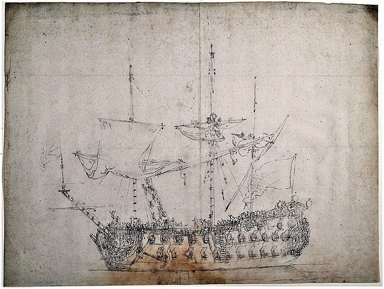
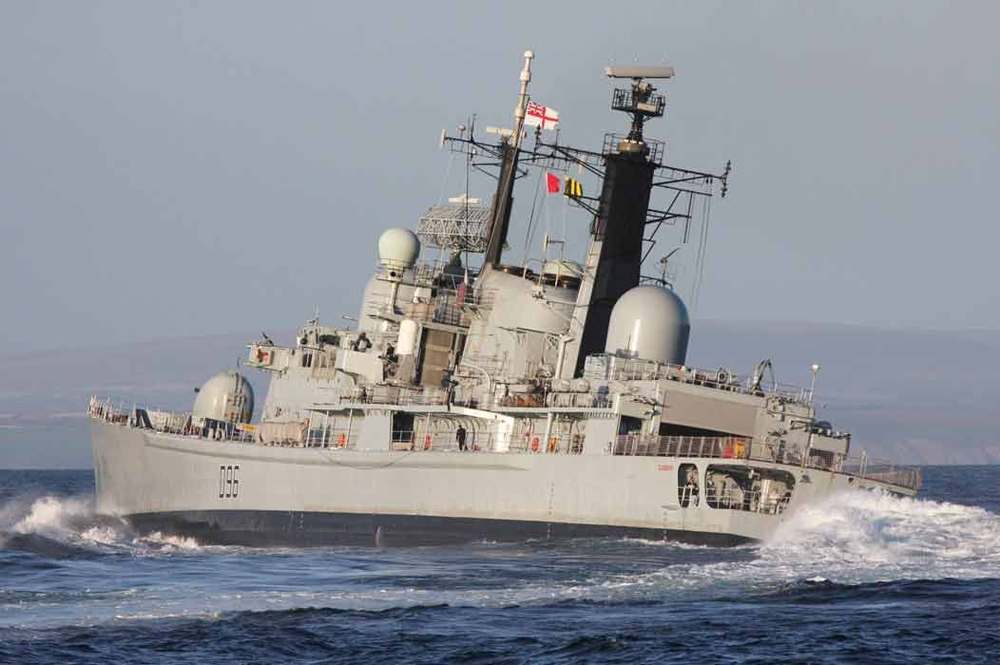
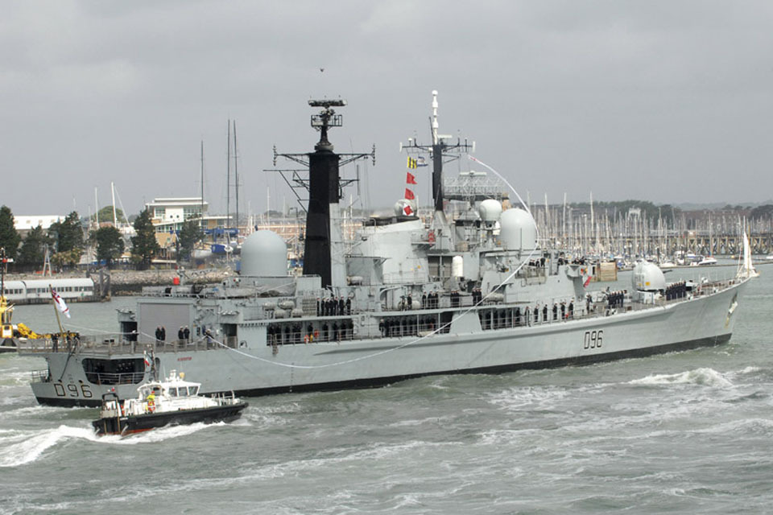
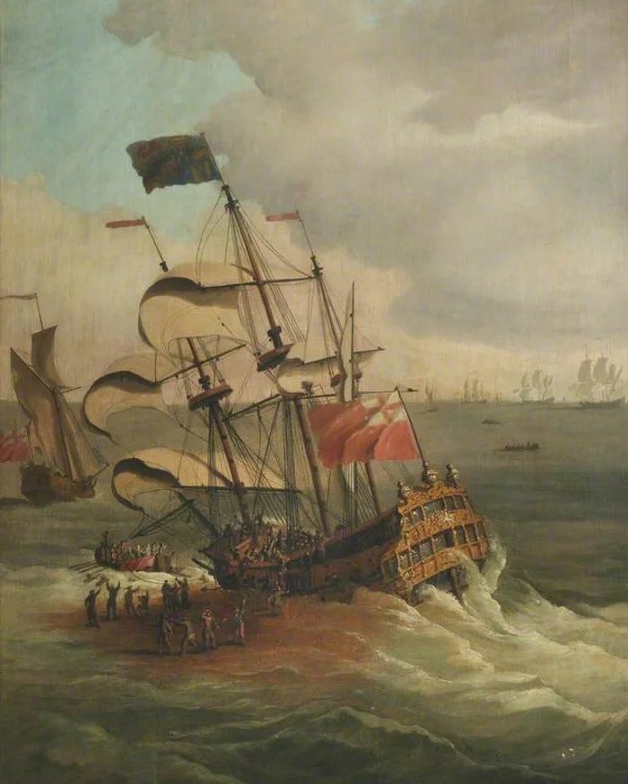
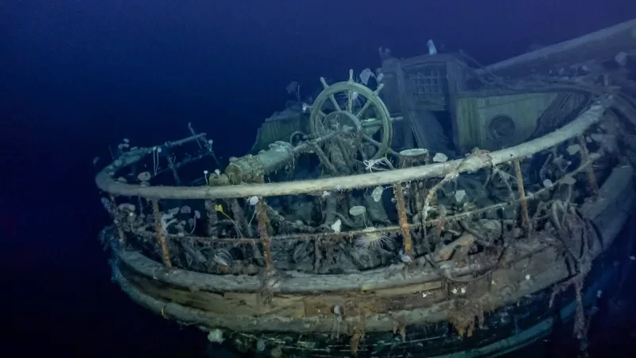

1654 – Construction Begins
The HMS Gloucester, a 54-gun frigate, was ordered and construction began at Limehouse, London.

1654 – Launched
The ship was launched later the same year, becoming part of the Royal Navy during the Commonwealth period.

1660 – Restoration of King Charles II
After the monarchy was restored, HMS Gloucester continued service under the royal fleet.

1682 – Final Voyage
The ship was selected to carry the Duke of York (later James II) to Scotland.

6 May 1682 – The Wreck
The HMS Gloucester struck a sandbank off the Norfolk coast and sank. Between 130–250 people died.

2007 – Wreck Rediscovered
After decades of searching, the wreck was finally located by Norfolk divers.

2022 – Public Announcement
The discovery of the wreck was officially revealed, attracting global historical interest.